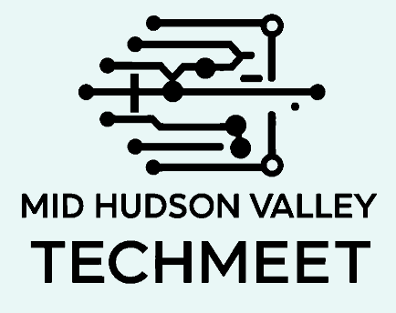

Deduplication and Probabilistic Record Linkage
Michael Kurilko, Thomas Bruce · Marist University

Innovate. Connect. Inspire.
Marist University · Poughkeepsie, New York
The Mid-Hudson Valley TechMeet returned in 2025 with a focus on emerging technologies, community collaboration, and innovation. The second annual event was held in collaboration with the Marist Computing Conference.
Location: Murray Student Center, Marist University, 3399 North Road, Poughkeepsie, NY 12601.
Attendees were directed to park in the Sheahan Parking Lot. Vehicles with accessible parking permits could use reserved spaces throughout campus; the most accessible spaces near the Murray Student Center were in the Donnelly parking lot.
Michael Kurilko, Thomas Bruce · Marist University
Linda Mukundwa, Brian Gormanly · Marist University
Chenlu (Brigitta) Yu, Aaditya Penmetsa, Yingqi (Cheech) Li · Bard College
Paul Bergeron, Sandhya Aneja · Marist University
Marcus Regan, Dominick Foti · Marist University
Daniel Baturin, Ralph Wakim, Lorenzo Marfoglia, Casimer DeCusatis · Marist University
Max Debin, Marcus Regan, Cameron Achorn, Dominick Foti · Marist University
Meghan Bullock, Nicholas Barragato, Sana Seth, Dmitry Burshteyn · Siena University
Emiliano Araya, Simon Grabbe, Royal Kozlowski, Luis Ramirez, Angelie Gabriel · Bergen Community College
Felix Omondi · Vassar College
Hanieh Kachooee, Cindy Kim · Bergen Community College
Samip Paudel, James Hatch, Nicholas Misko · Vassar College
Areebah Aziz, Filippos Sakellariou · Vassar College
Felix Omondi · Vassar College
Areebah Aziz, Filippos Sakellariou · Vassar College